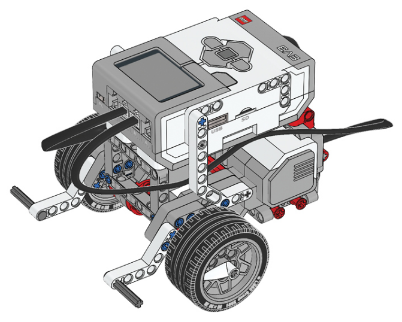
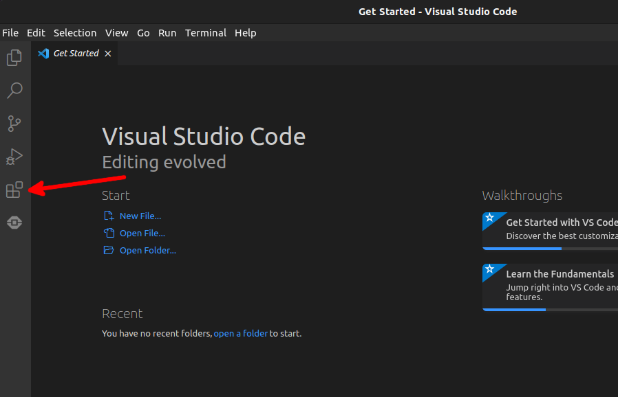
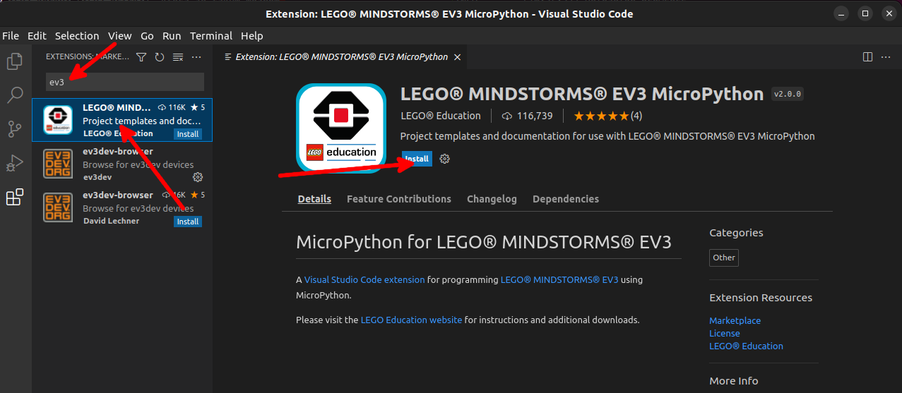
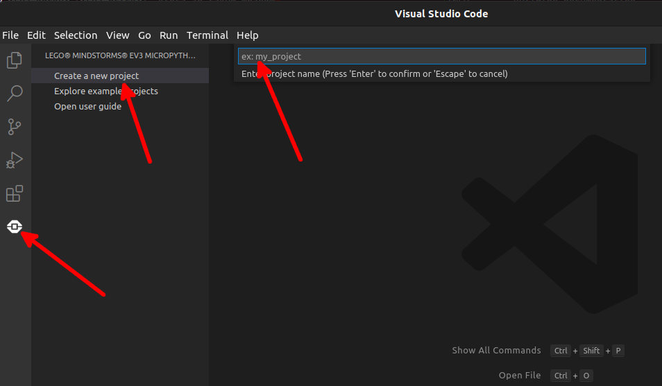
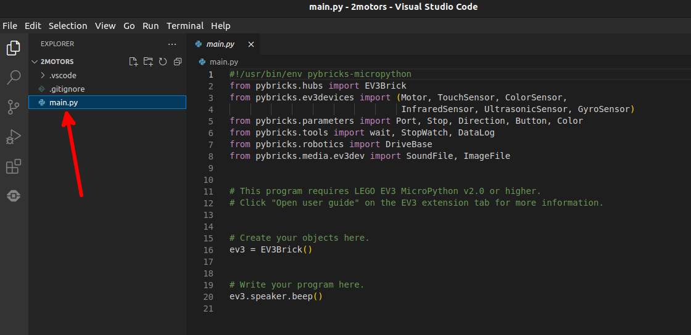
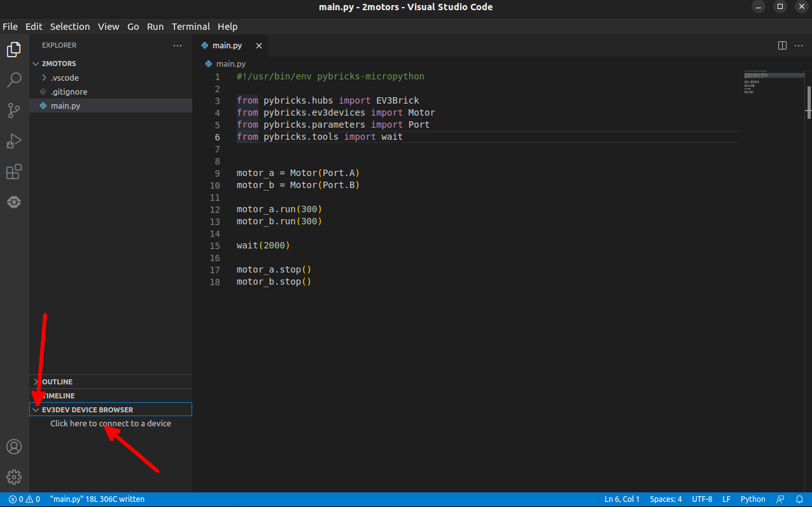
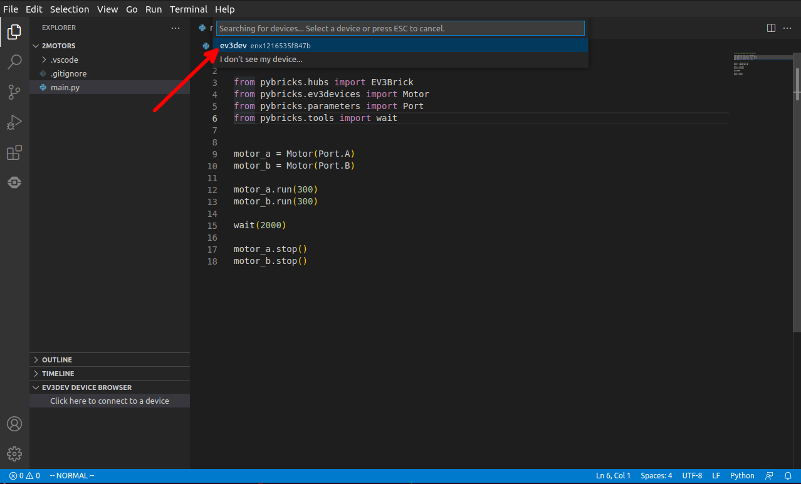
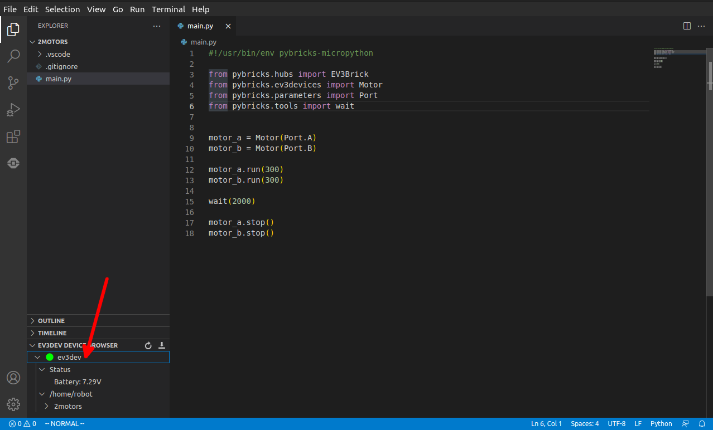
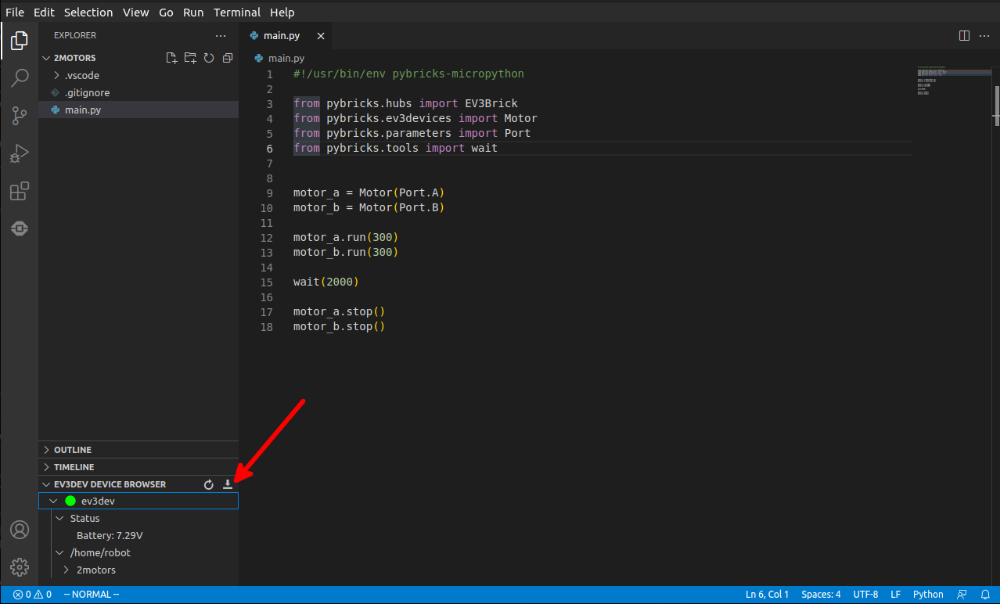
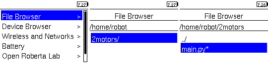

Prvý robot
Dnes si postavíme a naprogramujeme našeho prvého LEGO robota! Bude mať dva motory aby sa vedel pohybovať a EV3-kocku (EV3 brick), ktorá je takým mozgom celého robota, bude riadiť motory, ktoré pripojíme do nej káblami. Káble by sme mohli prirovnať k nervom a žilám v človeku. EV3-kocka je zároveň aj srdcom -- v zadnej časti obsahuje batérie, bez ktorých by mozog ani nohy (motory) nemohli fungovať. Návod ako robota postaviť nájdete tu.

Príprava EV3-kocky
Programy budeme stále písať na počítači a potom ich cez USB kábel nahráme do
kocky. Aby EV3-kocka vedela spustiť Python, musíme jej trochu pomôcť. Na micro
SD kartu nahráme špeciálny operačný systém ev3dev.
Keď bude SD karta v EV3-kocke a zapneme ju, spustí sa ev3dev. Ak sa chceme
dostať do pôvodného režimu, jednoducho vypneme kocku, vytiahneme SD kartu
a znovu spustíme robota.
Tip
Návod na prípravu SD karty nájdete na stránkach ev3dev, kroky 1, 2 a 4.
Príprava počítaču
Keďže EV3-kocka je omnoho jednoduchšie zariadenie než bežný počítač, nebudeme na nej spúšťať skutočný Python, ale jeho jednoduchšiu verziu: MicroPython špeciálne upravený pre LEGO, nazýva sa Pybricks. Tak budeme môcť z Pythonu spúšťať LEGO motory, vykreslovať obrázky na displeji, či načítavať dáta z rôznych senzorov. Aby sme tieto programy vedeli spustiť na EV3-kocke, potrebujeme vykonať ešte niekoľko vecí:
- Nainštalovať si Visual Studio Code
- Spustiť ho
- Otvoriť extension tab 
- Vyhľadať rozšírenie EV3 MicroPython a nainštalovať ho 
Tak a máme všetko pripravené :)
Vpred!
Teraz si napíšeme prvý jednoduchý program, ktorý pohne robota o kúsok vpred.
- Vo Visual Studio Code si vytvoríme nový projekt. 
- Zadáme názov, napr. "2motors", a stlačíme Enter.
- Otvorí sa nám prehliadač súborov. Tu zvolíme priečinok, kde chceme náš projekt mať uložený.
- Dostaneme bezpečnostné upozornenie, či veríme autorom súborov vo zvolenom priečinku. Za predpokladu, že všetky budeme písať my, potvrdíme, že áno
- Vo zvolenom priečinku sa nám vytvoril nový projektový priečinok s názvom
aký sme zvolili v kroku 2 ("2motors"). Ten obsahuje súbor
main.pys kódom, ktorý sa bude na robotovi spúšťať.  - Vymažme počiatočný vygenerovaný kód v
main.pya skopírujme doň tento:Vyzerá trochu inak ako tie, čo sme písali doteraz. Zatiaľ sa tým netrápme, onedlho si všetko rýchlo vysvetlíme. - Teraz zapneme EV3-kocku (s SD kartou s nahratým
ev3dev), prípojíme ju USB káblom k počítaču a pripojíme sa ku nej z Visual Studio Code.  - Zvolíme našu EV3-kocku. 
- Vľavo dole by sme mali vidieť najprv žltý krúžok (EV3-kocka sa pripája), potom zelený, indikujúci úspešné pripojenie. Ak je červený, spojenie zlyhalo. Klik pravým -> "Reconnect" pre nový pokus.  Ak sa pripojiť nedarí a používate Ubuntu, môže pomôcť nastaviť "IPv4 Method" na "Shared to other computers" vrámci nastavení siete "USB Ethernet".
- Teraz nahráme program do EV3-kocky pomocou tlačidla vpravo od "EV3DEV DEVICE BROWSER" (vľavo dole). 
- Aby sme program spustili, musíme ho nájsť an EV3-kocke. Zvolíme (stredným
tlačidlom)
File Browser->2motors->main.py.  - Po spustení sa motory na 2 sekundy rozbehnú a potom zastavia. To je všetko, čo náš program teraz robí. Celý tento postup nahrania kódu do EV3-kocky a spustenie ho sa dá spraviť naraz pomocou klávesu F5, skúste si to.
Vysvetlenie kódu
Prejdime si teraz náš program postupne, riadok po riadku:
Toto je špeciálny riadok, ktorý hovorí, ako (akým interpretrom) spustiť napísaný kód. Nechceme ho spustiť ako klasický Python, ktorý sme používali doteraz. Tento riadok tiež budeme písať v každom našom ďalšom programe pre robota. Vždy musí byť hneď na začiatku súboru.
Zatiaľ sme používali len bežné funkcie Pythonu, napr. sme ho používali ako
jednoduchú kalkulačku, používali sme print či list. Ale existuje
veľmi veľa rôznych funkcií, ktoré sa v Pythone dajú využiť. Aby v nich bol
aspoň trochu poriadok, delia sa na balíčky (package) a moduly (module).
Väčšinu z nich je treba doinštalovať, my si vystačíme s tými, ktoré sú vstavané
v Pybricks. Balíček pybricks obsahuje všetko potrebné na riadenie EV3-kocky,
motorov, komunikáciu so senzormi. Tento balíček obsahuje niekoľko modulov.
Napr. ev3devides, parameters, tools. No a tieto moduly zase
obsahujú funkcie a triedy (o triedach si povieme niečo viac o chvíľu) -- ak ich
chceme v našom kóde využiť, musíme si ich naimportovať:
from package.module import function. A to presne sa deje na týchto 4
riadkoch. Naimportujeme si triedy Motor, Port a funkciu wait,
ktoré budeme ďalej používať. Bez tohto import by sme dostali chybovú
hlášku ak by sme sa ich pokúsili použiť.
Ty sme využili naimportovanú triedu (class) Motor. Trieda slúži ako
továreň na objekty (object). Takýto objekt v počítači často reprezentuje
nejaký objekt v reálnom svete. Teraz je to jednoduché. Motor vytvorí
v pamäti EV3 objekt, pomocou ktorého budeme ovládať skutočný motor pripojený
káblom na EV3-kocku. Aby sa nám tento objekt v pamäti nestratil, pomenujeme
si ho. Ale náš robot má dva motory, jeden pripojený k portu B, druhý k portu
C. Musíme továrni povedať: "Teraz mi vyrob motor (objekt triedy Motor), ktorý
je pripojený na porte B. Teraz zase chcem motor pripojený na C-čko." Podobne
ako sme dávali argumenty do funkcií (napr. "ahoj" je argumentom
v print( "ahoj" )), argumenty dávame aj keď vytvárame objekty pomocou
tried. Port.B je spôsob ako povedať, že motor je pripojený k portu B.
Takže po vykonaní týchto dvoch riadkov, v pamäti EV3 sú dva motory, jeden
pomenovaný left_motor, pripojený na port B, a druhý, right_motor,
pripojený na port C.
Poznámka k triedam
Ak si pamätáte, slovíčko "class" sme už niekde videli.
Vlastne všetko je v Pythone objekt."hello" povie továrni triedy str
aby vytvorila objekt -- text "hello". 1 vytvorí tiež objekt -- číslo 1.
A rovnako pre list aj, v podstate, všetko ostatné :)
Keď chceme k vytvoreným objektom pristupovať, použijeme bodku .. Ako sme
zvykli zavolať funkciu (print( "hello" )), tak zavoláme aj funkciu
priradenú k objektu, tzv. metódu (method): objekt.metóda(argumenty).
Funkcia print jednoducho vypíše daný text na obrazovku. Ale run
potrebuje vedieť, aký motor má spustiť, preto je priradená k objektu, a teda
nie je len funkciou, ale metódou.
Parameter metódy run je rýchlosť, akou motor bude spustený, v stupňoch za
sekundu. Keďže kruh má 360 stupňov, je to rýchlosť 1 RPM (rotates per minute),
1 otočenie kolesa za sekundu. Ak by sme použili zápornú hodnotu, motor by sa
otáčal do druhej strany.
Tieto dva príkazy teda spustia oba motory rovnakou rýchlosťou. A budú bežať až pokým ich znovu nevypneme.
Funkcia wait jednoducho zastaví vykonávanie programu na daný počet milisekúnd.
Takže vykonávanie počká na tomto riadku 2 sekundy (1 sekunda má 1000
milisekúnd). Počas tejto doby sa nič nové nedeje, motory sú stále zapnuté.
Po ubehnutí 2 sekúnd oba motory vypneme metódou stop, ktorá neberie žiadne
argumenty. Takže kolesá by sa mali otočiť (približne) o dve celé otáčky --
skontrolujte to :)
Úloha
Vyskúšajte si program rôzne upravovať.
- Vyskúšajte ako rýchlo dokáže robot ísť.
- Naprogramujte ho tak, aby šiel dozadu, nie dopredu.
- Čo sa stane, ak spustíte len jeden motor, zatiaľ čo druhý bude stáť?
- Ako otočiť robota na mieste?
- Zamyslite sa, akú rýchlosť treba nastaviť motorom, aby sa robot pohyboval do kruhu.
Príklad
Teraz si ukážeme zaujímavejší pohyb -- do špirály. Začneme v strede a postupne budeme robiť akoby väčší a väčší kruh. Už vieme, že na pohyb do kruhu je potrebné jednému motoru udeliť väčšiu rýchlosť než druhému. A čím je tento rozdiel rýchlostí menší, tým je kruh väčší. Až pokým nebude rozdiel nulový, vtedy pôjde robot rovno.
Na postupné znižovanie rýchlosti motoru C sme použili nám už známu
konštrukciu for ... in range(...). range generuje čísla
od prvého vrátane, po posledné, ale zastaví sa jeden krok pred ním, preto
sme použili 359, aby na konci bola rýchlosť o jedna väčšia, teda 360,
a robot šiel rovno.
Na dnes toho bolo už dosť, nabudúce si ukážeme jeden spôsob ako púšťať motory o niečo presnejšie, a tiež použijeme prvý krát senzor! Bude to tlačidlový senzor, ktorým môžeme napr. odštartovať rôzne akcie robota alebo detekovať zrážku s iným predmetom.